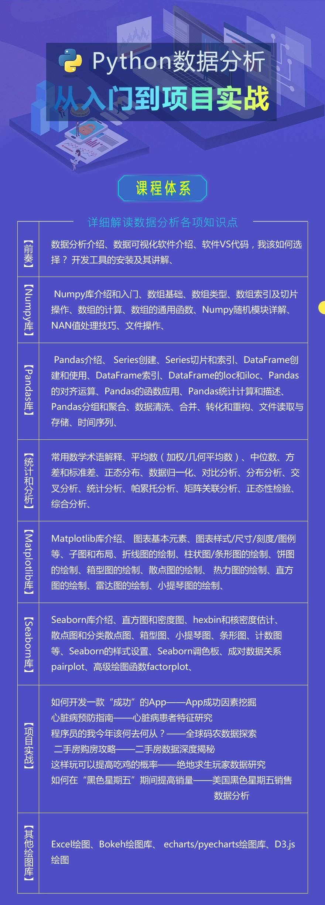
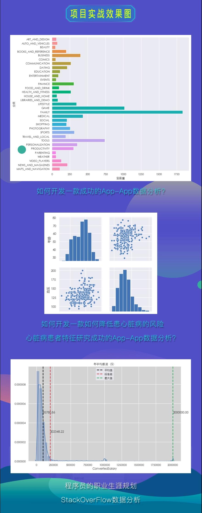

项目实战带你从零开始学Python数据分析
数据化的时代，Python数据分析是很多学Python的朋友绕不开的话题，很多人就是因为要进行数据分析才去学Python的。这门课程主要讲数据分析，数据可视化，21天，250多课时，带你用数据认识这个世界！
细致的课程讲解，丰富真实的项目案例，让你快速掌握数据分析技能。课程不仅仅讲解Python方面相关的库，还介绍了数据分析相关的统计学和分析方法，更加入了类似Echarts.js库，增强在企业的核心竞争力！

课程售价：358元
购买联系微信:VIPdjango

关于课程收看方法：
购买后，可以通过手机、电脑在线播放，永久观看。
相关素材与文档:
购买后统一加售后群分发，群内有老师在线解惑。
============================================================================
课程详细目录：
第一天∶数据分析入门
章节1∶
课时1【数据分析准备】课程介绍
课时2【数据分析准备】什么是数据分析
课时3【数据分析准备】开发环境搭建
课时4 【数据分析准备】jupyter notebook详细讲解
课时5【数据分析准备】作业-前奏部分作业
章节2∶
第二天∶ Numpy数据处理库（1）
课时6【Numpy库】Numpy库介绍
课时7【Numpy库】数组的创建方式【
课时8 Numpy库】数组的数据类型详解
课时9【Numpy库】多维数组及其简单操作
课时10【Numpy库】数组的索引和切片详解
课时11【Numpy库】布尔索引
课时12【Numpy库】】数组值的替换
课时13【Numpy库】索引和切片作业
课时14【Numpy库】数组的广播机制
课时15【Numpy库】数组形状操作-reshpae、resize、flatten、ravel
课时16【Numpy库】数组形状操作-数组的叠力口
课时17【Numpy库】数组形状操作-数组切割
课时18【Numpy库】数组形状操作-转置
课时19【Numpy库】数组的浅拷贝和深拷贝
课时20【Numpy库】文件操作-cSV文件操作
课时21【Numpy库】文件操作-save和load方式
课时22【csv文件】读取csv文件的两种方式
课时23【csv文件】写入csV文件的两种方式
课时24【Numpy库】作业-数组操作和文件操作作业
章节3∶
第三天∶Numpy数据处理库（2）
课时25【Numpy库】NAN和INF值的认识
课时26【Numpy库】NAN和INF值处理-删除
课时27【Numpy库】NAN和INF值处理-替换
课时28【Numpy库】random模块
课时29【Numpy库】axis轴理解
课时30【Numpy库】通用函数一元函数
课时31【Numpy库】通用函数-二元函数
课时32【Numpy库】通用函数-聚合函数
课时33【Numpy库】通用函数-布尔判断函数
课时34【Numpy库】通用函数-排序
课时35【Numpy库】通用函数-其他函数补充
章节4、Pandas新版∶
课时36【Pandas库】Pandas库介绍
课时37【Pandas库】Series数据结构介绍
课时38【Pandas库】DataFrame对象的创建
课时39【Pandas库】查看DataFrame对象
课时40【Pandas库】DataFrame的基本操作
课时1【Pandas库】索引类型详解
课时42【Pandas库】Series索引操作
课时43【Pandas库】DataFrame索引操作
课时44【Pandas库】4种重置索引的方法
课时45【Pandas库】数据类型转化（1）
课时46【Pandas库】数据类型转化（2）
课时47【Pandas库】数据类型转化（3）
课时48【Pandas库】CSV文件操作详解
课时49【Pandas库】Excel文件操作详解
课时50【Pandas库】SQL文件操作详解
课时51【Pandas库】缺失值处理
课时52【Pandas库】apply、applymap以及axis理解
课时53【Pandas库】sort_values和sort_index排序
课时54【Pandas库】逻辑运算与query方法详解
课时55【Pandas库】统计函数与累计函数
课时56【Pandas库】数据离散化
课时57【Pandas库】数据合并concat方法
课时58【Pandas库】数据合并merge详解
课时59 【Pandas库】分组和聚合
课时60【Pandas库】交叉表使用详解
课时6【Pandas库】交叉表实战
课时62【Pandas库】透视表使用详解
章节5、第四天∶Pandas库数据处理库（1）
课时63【Pandas库】pandas介绍
课时64【Pandas库】Series创建
课时65【Pandas库】Series基本用法
课时66【Pandas库】Series总结
课时67【Pandas库】】Series作业
课时68【Pandas库】DataFrame介绍
课时69【Pandas库】DataFrame创建-字典类
课时70【Pandas库】DataFrame创建-列表类
课时71【Pandas库】DataFrame基本使用
课时72【Pandas库】DataFrame作业
章节6、第五天∶Pandas数据处理库（2）
课时73【Pandas库】Pandas索引操作-index对象
课时74【Pandas库】Pandas索引操作-重新索引
课时75【Pandas库】Pandas索引操作-增
课时76【Pandas库】Pandas索引操作-删
课时77【Pandas库】Pandas索引操作改
课时78【Pandas库】Pandas索引操作一查
课时79【Pandas库】Pandas索引操作--高级索引
课时80【Pandas库】Pandas索引操作-作业
章节7、第六天∶ Pandas数据处理库（3）
课时81【Pandas库】Pandas对齐运算一算术运算和数据对齐
课时82【Pandas库】Pandas对齐运算-填充值
课时83【Pandas库】Pandas对齐运算一混合运算
课时84【Pandas库】Pandas函数应用-apply和applymap
课时85【Pandas库】Pandas函数应用一排序
课时86【Pandas库】Pandas函数应用-唯一值和成员属性
课时87【Pandas库】Pandas函数应用一处理缺失数据
课时88【Pandas库】Pandas层级索引
课时89【Pandas库】Pandas统计计算和描述
课时90【Pandas库】Pandas入门总结
章节8∶
章节8，第七天∶ Pandas数据处理库（4）
课时91【Pandas库】数据加载，存储与文件格式一读写文本格式文件
课时92【Pandas库】数据清洗和准备一处理缺失数据
课时93【Pandas库】数据清洗和准备-移除重复数据
课时94【Pandas库】数据清洗和准备一利用映射或函数转换数据
课时95【Pandas库】数据清洗和准备-替换值
课时96【Pandas库】数据清洗和准备-重命名轴索引
课时97【Pandas库】数据清洗和准备-离散化和面元划分
课时98【Pandas库】数据清洗和准备--检测和过滤异常值
课时99【Pandas库】数据清洗和准备--排列和随机采样
课时100【Pandas库】数据清洗和准备-字符串对象方法
课时101【Pandas库】数据清洗和准备-正则表达式
课时102【Pandas库】数据清洗和准备--pandas的矢量化字符串函数
课时103【Pandas库】数据清洗和准备--总结
课时104【Pandas库】数据清洗和准备--作业
章节9∶ 第八天∶ Pandas数据处理库（5）
课时105【Pandas库】数据规整一层次化索引
课时106【Pandas库】数据规整-数据连接
课时107【Pandas库】数据规整一数据合并
课时108 【Pandas库】数据规整一重塑层次化索引
课时109【Pandas库】数据规整-轴向旋转
课时110【Pandas库】数据分组和聚合
课时111【Pandas库】数据分组和聚合-补充
课时112【Pandas库】数据规整，分组聚合一作业
章节10∶ 第九天∶Matplotlib绘图库（1）
课时113【Matploblib库】数据分析中的常用图剖析
课时114【Matploblib库】matplotib基本使用
课时115【Matploblib库】设置折线图的线条样式
课时116【Matploblib库】设置图标题和显示中文
课时117【Matploblib库】设置轴刻度和文本显示
课时118【Matploblib库】设置marker和注释文本
课时119【Matploblib库】画板样式设置和保存图片
课时120【Matploblib库】绘制多个子图和matplotlib风格设置
课时121【Matploblib库】作业-折线图作业要求
章节11∶ 第十天∶Matplotlib绘图库（2）
课时122【Matploblib库】条形图-垂直条形图的绘制
课时123【Matploblib库】条形图-横向条形图的绘制
课时124【Matploblib库】条形图-分组条形图的绘制
课时125【Matploblib库】条形图-堆叠条形图的绘制
课时126 【Matploblib库】作业-条形图作业要求.
课时127【Matploblib库】直方图-直方图的绘制
课时128【Matploblib库】作业-直方图作业要求
章节12∶第十—天∶ Matplotlib绘图库（3）
课时129【Matploblib库】散点图-散点图的绘制
课时130【Matploblib库】散点图-绘制回归曲线
课时131【Matploblib库】作业-散点图作业要求
课时132 【Matploblib库】饼图-饼图的绘制
课时133【Matploblib库】作业-饼图的作业要求
课时134【Matploblib库】箱线图-箱线图详解
课时135【Matploblib库】箱线图-箱线图的绘制
课时136【Matploblib库】作业-箱线图作业要求
课时137【Matploblib库】雷达图-雷达图的绘制
课时138【Matploblib库】作业-雷达图作业要求
章节13∶ 第十二天∶Matplotlib绘图库（4）
课时139【Matploblib库】matplotlib图结构分析
课时140【Matploblib库】Axes对象讲解
课时141【Matploblib库】Axis对象讲解
课时142【Matploblib库】Tick对象讲解
课时143【Matploblib库】多子图调整布局
课时144【Matplobli库】自定义多图布局
课时145【Matploblib库】散点图直方图综合案例
课时146【Matploblib库】rcParams配置详解
章节14∶ 第十三天∶Seaborn绘图库
课时147【Seaborn库】关系图-散点图的绘制
课时148【Seaborn库】关系图-折线图的绘制
课时149【Seaborn库】分类图-分类散点图的绘制
课时150 【Seaborn库】分类图-分类分布图的绘制
课时151【Seaborn库】分类图-分类统计图的绘制
课时152【Seaborn库】分布图-单一变量分布图的绘制
课时153【Seaborn库】分布图-二变量分布图的绘制
课时154【Seaborn库】分布图-pairplot分布图的绘制
课时155【Seaborn库】线性回归-线性回归图的绘制
课时156【Seaborn库】FacetGrid绘图-FacetGrid讲解（1）
课时157【Seaborn库】FacetGrid绘图-FacetGrid讲解（2）
课时158【Seaborn库】FacetGrid绘图-FacetGrid讲解（3）
课时159【Seaborn库】seaborn样式和风格设置
课时160【Seaborn库】调色盘-调色盘的使用和定性调色盘
课时161【Seaborn库】调色盘-连续和离散调色盘
课时162【Seaborn库】作业-seaborn作业要求
章节15∶ Pyecharts库
课时163【pyecharts】pyecharts介绍
课时164【pyecharts】pyecharts快速入门
课时165【pyecharts】绘图配置项数据准备
课时166【pyecharts】绘图配置项讲解（1）
课时167【pyecharts】绘图配置项讲解（2）
课时168【pyecharts】条形图的绘制
课时169【pyecharts】箱线图的绘制
课时170【pyecharts】地图的绘制
章节16∶ 第十四天∶数据分析实战
课时171【绝地求生】数据集介绍和缺失值处理
课时172【绝地求生】数据集内存压缩
课时173【绝地求生】异常数据处理
课时174【绝地求生】计算是否吃鸡特性
课时175【绝地求生】武器和吃鸡的关系分析
课时176【绝地求生】寻找吃鸡概率最高的队友
课时177【绝地求生】射击距离与枪的选择
课时178【绝地求生】移动距离与吃鸡分布
课时179【黑色星期五】黑色星期五个人消费金额分析
课时180【黑色星期五】性别和婚姻状况分布分析
课时181【黑色星期五】年龄和产品购买信息挖掘
课时182【黑色星期五】产品销售情况分析
课时183【黑色星期五】城市与购买力之间的分析
课时184【黑色星期五】相同产品在不同城市的购买力分析
章节17∶ 第十五天∶机器学习（1）
课时186【机器学习】认识机器学习
课时187【机器学习】scikit-earn库介绍
课时188【机器学习】算法介绍
课时189【机器学习】sklearn数据集介绍
课时190【机器学习】K近邻算法原理
课时191【机器学习】使用sklearn实现K近邻
课时192【机器学习】K近邻预测约会是否受欢迎
课时193【机器学习】标准化原理和代码实现
课时194【机器学习】K近邻总结和作业
章节18∶第十六天∶机器学习（2）
课时195【机器学习】朴素贝叶斯公式详解
课时196【机器学习】朴素贝叶斯文档分类原理
课时197【机器学习】特征抽取-CountVectorizer
课时198【机器学习】朴素贝叶斯文章分类实战
课时199【机器学习】多项式、高斯、伯努利模型
课时200【机器学习】决策树理解
课时201【机器学习】决策树之信息熵
课时202【机器学习】决策树之信息熵补充
课时203【机器学习】决策树之信息增益
课时204【机器学习】决策树之算法选择（ID3，C4.5，CART）
课时205【机器学习】决策树算法之预剪枝和后剪枝
课时206【机器学习】实战-泰坦尼克号获救预测（1）
课时207【机器学习】实战-泰坦尼克号获救预测（2）
课时208【机器学习】决策树的绘制
课时209【机器学习】随机森林原理
课时210【机器学习】sklearn实现随机森林
章节19∶ 第十七天∶机器学习（3）
课时211【机器学习】线性回归通俗解释
课时212【机器学习】线性回归方程和损失函数
课时213【机器学习】线性回归推导-求解对象转换
课时214【机器学习】线性回归推导-似然函数
课时215【机器学习】线性回归推导-梯度下降
课时216【机器学习】线性回归预测波士顿房价
课时217【机器学习】正则化和岭回归
课时218【机器学习】逻辑回归原理
课时219【机器学习】逻辑回归预测是否患癌症
课时220【机器学习】精确率和召回率
章节20∶ 第十八天∶机器学习（4）
课时221【机器学习】特征工程字典特征抽取
课时222【机器学习】特征工程-文本特征抽取和ieba分词
课时223【机器学习】特征工程-TFIDF特征抽取
课时224【机器学习】特征工程-归—化
课时225【机器学习】特征工程-标准化
课时226【机器学习】特征工程-缺失值处理
课时227【机器学习】特征工程-特征选择
课时228【机器学习】特征工程-PCA原理分析
课时229【机器学习】特征工程-PCA实例
章节21∶ 第十九天∶机器学习实战（1）
课时230【项目实战】Airbnb数据集-价格因素分析
课时231【项目实战】Airbnb数据集-房屋数据预处理
课时232【项目实战】Airbnb数据集-房间类型和社区分析
课时233【项目实战】Airbnb数据集-房间类型和社区对比分析
课时234【项目实战】Airbnb数据集-房东房源数量分析
课时235【项目实战】Airbnb数据集-评论数量与时间分析
课时236【项目实战】Airbnb数据集-评论数量与时间综合分析
课时237【项目实战】Airbnb数据集-房屋价格预测（1）
课时238【项目实战】Airbnb数据集-房屋价格预测（2）
课时239【项目实战】Airbnb数据集-评论数量预测
课时240【项目实战】Airbnb数据集-预测结果可视化
章节22∶第二十天∶机器学习项目实战（2）
课时241【项目实战】心脏病预测数据集介绍
课时242【项目实战】心脏病预测-性别与患病分析
课时243【项目实战】心脏病预测-年龄与患病分析
课时244【项目实战】心脏病预测-特征相关性分析
课时245【项目实战】心脏病预测-特征预处理
课时246【项目实战】心脏病预测-K近邻预测
课时247【项目实战】心脏病预测-精准率召回率以及ROC曲线
课时248【项目实战】心脏病预测-决策树算去评估
课时249【项目实战】心脏病预测-随机森林算去评估
课时250【项目实战】心脏病预测-逻辑回归算法评估
课时251【项目实战】心脏病预测-SGD分类算评估
课时252【项目实战】心脏病预测-特征重要性分析